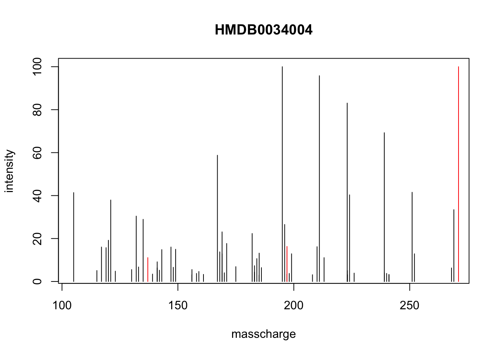
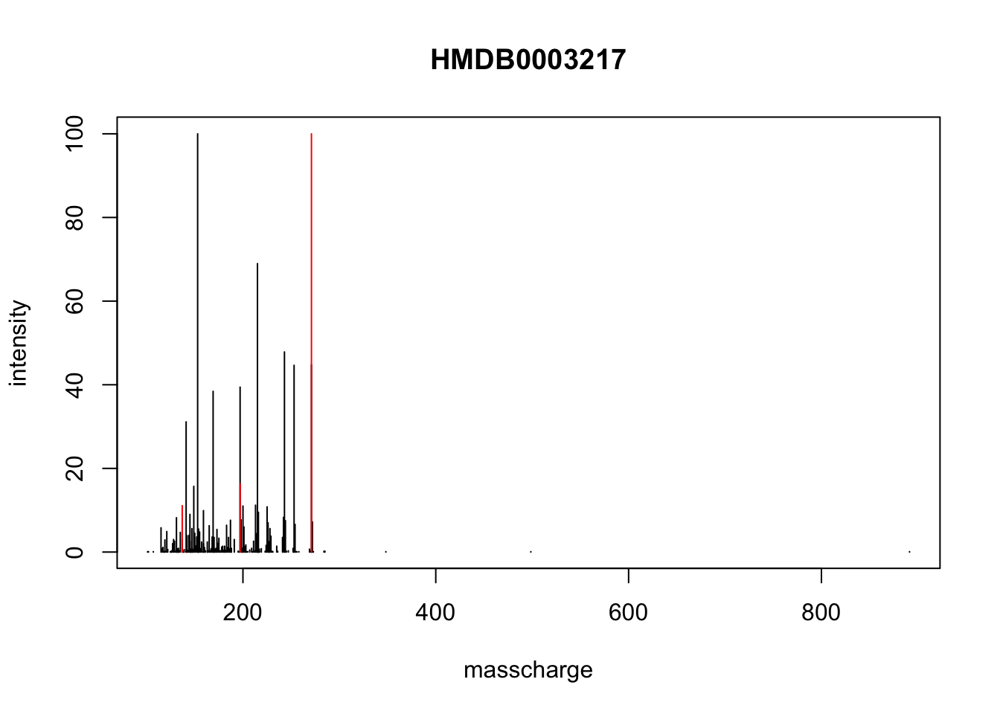

Last year I make a poster presentation for MS/MS annotation by paired mass distance(PMD) analysis. It’s already been included as pmdanno function in pmd package. Here I will explain the principle of PMD annotation.
Firstly, you need a spectra database. Here I use HMDB MS/MS spectra database as an example. Then you will get a list with each compound as element. The list should have a element of spectra with mz and ins, an element of name, an element of prec for precursor ions. I have included this database in rmwf package.
# remotes::install_github('yufree/rmwf')
# remotes::install_github('yufree/pmd')
library(rmwf)
data("qtof")
str(qtof)## List of 4
## $ name : chr [1:5062] "HMDB0000014" "HMDB0000014" "HMDB0000014" "HMDB0000014" ...
## $ mz : num [1:5062] 227 227 227 227 227 ...
## $ msms :List of 5062
## ..$ : num 116
## ..$ : num [1:3] 5 111 116
## ..$ : num [1:15] 0.07 16.03 16.1 27.01 42.01 ...
## ..$ : num [1:15] 0.07 16.03 16.1 27.01 42.01 ...
## ..$ : num 116
## ..$ : num [1:3] 5 111 116
## ..$ : num [1:136] 1.98 2.01 2.01 2.02 2.02 2.02 3.99 3.99 4.03 4.03 ...
## ..$ : num [1:36] 1 3.99 3.99 5 8.01 ...
## ..$ : num [1:3] 30 44 74
## ..$ : num [1:6] 18 18 36 83 101 ...
## ..$ : num [1:15] 1.98 9.98 11.96 18.01 26.02 ...
## ..$ : num [1:6] 18 18 36 83 101 ...
## ..$ : num [1:15] 1.98 9.98 11.96 18.01 26.02 ...
## ..$ : num [1:3] 30 44 74
## ..$ : num 1
## ..$ : num [1:10] 1 10 34 43 44 ...
## ..$ : num [1:3] 1 18 19
## ..$ : num [1:45] 0.98 1 9.98 15.01 16.03 ...
## ..$ : num [1:190] 0.93 0.98 1 1 1.06 2.02 2.02 2.04 2.95 2.95 ...
## ..$ : num [1:105] 1 1 1.01 1.06 2 2.01 2.02 2.95 2.98 3.01 ...
## ..$ : num [1:703] 0.03 0.04 0.62 0.93 0.93 0.97 0.99 1 1 1 ...
## ..$ : num [1:3] 46 71 117
## ..$ : num [1:36] 2.02 8.01 9.98 12 12 ...
## ..$ : num [1:21] 0.08 9.04 12 17.03 29.03 ...
## ..$ : num [1:21] 0.08 9.04 12 17.03 29.03 ...
## ..$ : num [1:3] 46 71 117
## ..$ : num [1:36] 2.02 8.01 9.98 12 12 ...
## ..$ : num 17
## ..$ : num 27
## ..$ : num [1:6] 15 27 27 42 42 ...
## ..$ : num 27
## ..$ : num [1:6] 15 27 27 42 42 ...
## ..$ : num 17
## ..$ : num [1:3] 1.01 59.01 60.02
## ..$ : num [1:3] 1.01 59.01 60.02
## ..$ : num [1:6] 18 37.1 55.1 212 249.1 ...
## ..$ : num 212
## ..$ : num 212
## ..$ : num 212
## ..$ : num 212
## ..$ : num [1:6] 18 37.1 55.1 212 249.1 ...
## ..$ : num 132
## ..$ : num 132
## ..$ : num [1:3] 27 132 159
## ..$ : num 132
## ..$ : num [1:3] 27 132 159
## ..$ : num 132
## ..$ : num 17
## ..$ : num 132
## ..$ : num 132
## ..$ : num 132
## ..$ : num 132
## ..$ : num [1:3] 1 17 18
## ..$ : num 9.45
## ..$ : num 9.45
## ..$ : num 194
## ..$ : num [1:3] 55.1 194 249.1
## ..$ : num [1:3] 55.1 194 249.1
## ..$ : num 194
## ..$ : num [1:10] 0.95 17.06 18.01 24.95 42.01 ...
## ..$ : num [1:15] 0.95 1.01 1.01 2.02 17.06 ...
## ..$ : num [1:10] 0.95 17.06 18.01 24.95 42.01 ...
## ..$ : num [1:3] 1 36 37
## ..$ : num [1:2485] 0.03 0.03 0.03 0.04 0.04 0.04 0.04 0.04 0.04 0.04 ...
## ..$ : num 46
## ..$ : num 46
## ..$ : num [1:3] 18 26 44
## ..$ : num [1:3] 18 26 44
## ..$ : num 17
## ..$ : num [1:3] 18 28 46
## ..$ : num [1:3] 18 28 46
## ..$ : num 26
## ..$ : num 26
## ..$ : num [1:6] 2.02 17.03 25.98 27.99 43.01 ...
## ..$ : num [1:6] 2.02 17.03 25.98 27.99 43.01 ...
## ..$ : num [1:3] 1 180 181
## ..$ : num [1:16836] 0.02 0.03 0.03 0.03 0.04 0.04 0.05 0.05 0.05 0.06 ...
## ..$ : num [1:15] 6.09 18.01 19.12 20.88 21.91 ...
## ..$ : num 46
## ..$ : num 46
## ..$ : num 46
## ..$ : num 46
## ..$ : num 46
## ..$ : num 46
## ..$ : num 46
## ..$ : num 46
## ..$ : num [1:28] 1.01 1.98 8.06 15.94 15.99 ...
## ..$ : num [1:28] 1.01 1.98 8.06 15.94 15.99 ...
## ..$ : num 212
## ..$ : num 212
## ..$ : num [1:3] 18 225 243
## ..$ : num [1:3] 18 225 243
## ..$ : num [1:3] 18 225 243
## ..$ : num [1:3] 18 225 243
## ..$ : num 212
## ..$ : num 212
## ..$ : num [1:3] 2.02 44.03 46.04
## ..$ : num [1:3] 2.02 44.03 46.04
## ..$ : num 16
## .. [list output truncated]
## $ msmsraw:List of 5062
## ..$ :'data.frame': 2 obs. of 2 variables:
## .. ..$ masscharge: num [1:2] 112 228
## .. ..$ intensity : num [1:2] 70 100
## ..$ :'data.frame': 3 obs. of 2 variables:
## .. ..$ masscharge: num [1:3] 112 117 228
## .. ..$ intensity : num [1:3] 100 25.8 50.5
## ..$ :'data.frame': 6 obs. of 2 variables:
## .. ..$ masscharge: num [1:6] 66 93 135 210 226 ...
## .. ..$ intensity : num [1:6] 15.5 100 15.2 12 14.2 ...
## ..$ :'data.frame': 6 obs. of 2 variables:
## .. ..$ masscharge: num [1:6] 66 93 135 210 226 ...
## .. ..$ intensity : num [1:6] 15.5 100 15.2 12 14.3 ...
## ..$ :'data.frame': 2 obs. of 2 variables:
## .. ..$ masscharge: num [1:2] 112 228
## .. ..$ intensity : num [1:2] 70 100
## ..$ :'data.frame': 3 obs. of 2 variables:
## .. ..$ masscharge: num [1:3] 112 117 228
## .. ..$ intensity : num [1:3] 100 25.8 50.5
## ..$ :'data.frame': 814 obs. of 2 variables:
## .. ..$ masscharge: num [1:814] 45.2 45.4 45.4 45.8 46 ...
## .. ..$ intensity : num [1:814] 2.75 2.38 1.81 2.23 2.07 ...
## ..$ :'data.frame': 890 obs. of 2 variables:
## .. ..$ masscharge: num [1:890] 44.9 44.9 44.9 45.7 45.7 ...
## .. ..$ intensity : num [1:890] 0.927 1.514 1.947 0.402 0.34 ...
## ..$ :'data.frame': 3 obs. of 2 variables:
## .. ..$ masscharge: num [1:3] 108 138 182
## .. ..$ intensity : num [1:3] 72.5 100 48.7
## ..$ :'data.frame': 7 obs. of 2 variables:
## .. ..$ masscharge: num [1:7] 65 92.1 120 138.1 148 ...
## .. ..$ intensity : num [1:7] 12.29 8.8 6.49 7.67 100 ...
## ..$ :'data.frame': 6 obs. of 2 variables:
## .. ..$ masscharge: num [1:6] 65 92 110 120 122 ...
## .. ..$ intensity : num [1:6] 88.3 42.8 11.8 24.6 13.5 ...
## ..$ :'data.frame': 7 obs. of 2 variables:
## .. ..$ masscharge: num [1:7] 65 92.1 120 138.1 148 ...
## .. ..$ intensity : num [1:7] 12.31 8.81 6.51 7.71 100 ...
## ..$ :'data.frame': 6 obs. of 2 variables:
## .. ..$ masscharge: num [1:6] 65 92 110 120 122 ...
## .. ..$ intensity : num [1:6] 88.3 42.8 11.8 24.6 13.5 ...
## ..$ :'data.frame': 3 obs. of 2 variables:
## .. ..$ masscharge: num [1:3] 108 138 182
## .. ..$ intensity : num [1:3] 72.6 100 48.6
## ..$ :'data.frame': 6 obs. of 2 variables:
## .. ..$ masscharge: num [1:6] 166 200 209 243 244 ...
## .. ..$ intensity : num [1:6] 1.05 3.46 1.31 100 12.76 ...
## ..$ :'data.frame': 14 obs. of 2 variables:
## .. ..$ masscharge: num [1:14] 122 156 165 166 167 ...
## .. ..$ intensity : num [1:14] 7.75 10.08 4.93 30.33 3.05 ...
## ..$ :'data.frame': 6 obs. of 2 variables:
## .. ..$ masscharge: num [1:6] 227 228 229 245 246 ...
## .. ..$ intensity : num [1:6] 59.52 5.77 2.16 100 10.01 ...
## ..$ :'data.frame': 53 obs. of 2 variables:
## .. ..$ masscharge: num [1:53] 97 98.1 100 101 105.1 ...
## .. ..$ intensity : num [1:53] 13.87 1.2 1.36 1.07 8.73 ...
## ..$ :'data.frame': 72 obs. of 2 variables:
## .. ..$ masscharge: num [1:72] 79.1 81.1 82 85 91.1 ...
## .. ..$ intensity : num [1:72] 2.94 2.13 3.41 3.7 6.6 ...
## ..$ :'data.frame': 26 obs. of 2 variables:
## .. ..$ masscharge: num [1:26] 91.1 93.1 94.1 97 99 ...
## .. ..$ intensity : num [1:26] 18.02 8.07 8.51 81.98 9.6 ...
## ..$ :'data.frame': 228 obs. of 2 variables:
## .. ..$ masscharge: num [1:228] 95.1 95.1 95.3 96.2 96.9 ...
## .. ..$ intensity : num [1:228] 11.61 7.12 2.62 8.8 1.87 ...
## ..$ :'data.frame': 4 obs. of 2 variables:
## .. ..$ masscharge: num [1:4] 110 156 210 227
## .. ..$ intensity : num [1:4] 25.43 43.54 9.51 100
## ..$ :'data.frame': 10 obs. of 2 variables:
## .. ..$ masscharge: num [1:10] 83.1 93 95.1 110.1 122.1 ...
## .. ..$ intensity : num [1:10] 12.8 10.7 11 100 13.1 ...
## ..$ :'data.frame': 7 obs. of 2 variables:
## .. ..$ masscharge: num [1:7] 81 93 110 154 163 ...
## .. ..$ intensity : num [1:7] 14.4 11.1 100 79.3 11 ...
## ..$ :'data.frame': 7 obs. of 2 variables:
## .. ..$ masscharge: num [1:7] 81 93 110 154 163 ...
## .. ..$ intensity : num [1:7] 14.4 11.1 100 79.3 11 ...
## ..$ :'data.frame': 4 obs. of 2 variables:
## .. ..$ masscharge: num [1:4] 110 156 210 227
## .. ..$ intensity : num [1:4] 25.46 43.52 9.52 100
## ..$ :'data.frame': 10 obs. of 2 variables:
## .. ..$ masscharge: num [1:10] 83.1 93 95.1 110.1 122.1 ...
## .. ..$ intensity : num [1:10] 12.8 10.7 11 100 13.1 ...
## ..$ :'data.frame': 2 obs. of 2 variables:
## .. ..$ masscharge: num [1:2] 119 136
## .. ..$ intensity : num [1:2] 37.4 100
## ..$ :'data.frame': 3 obs. of 2 variables:
## .. ..$ masscharge: num [1:3] 92 107 134
## .. ..$ intensity : num [1:3] 6.71 26.83 100
## ..$ :'data.frame': 8 obs. of 2 variables:
## .. ..$ masscharge: num [1:8] 64 65 68 90 92 ...
## .. ..$ intensity : num [1:8] 6.91 37.74 8.31 8.91 74.77 ...
## ..$ :'data.frame': 3 obs. of 2 variables:
## .. ..$ masscharge: num [1:3] 92 107 134
## .. ..$ intensity : num [1:3] 6.69 26.8 100
## ..$ :'data.frame': 8 obs. of 2 variables:
## .. ..$ masscharge: num [1:8] 64 65 68 90 92 ...
## .. ..$ intensity : num [1:8] 6.91 37.73 8.33 8.95 74.78 ...
## ..$ :'data.frame': 2 obs. of 2 variables:
## .. ..$ masscharge: num [1:2] 119 136
## .. ..$ intensity : num [1:2] 37.4 100
## ..$ :'data.frame': 3 obs. of 2 variables:
## .. ..$ masscharge: num [1:3] 58.1 59.1 118.1
## .. ..$ intensity : num [1:3] 100 30.7 83
## ..$ :'data.frame': 3 obs. of 2 variables:
## .. ..$ masscharge: num [1:3] 58.1 59.1 118.1
## .. ..$ intensity : num [1:3] 100 30.7 82.9
## ..$ :'data.frame': 4 obs. of 2 variables:
## .. ..$ masscharge: num [1:4] 79 97 134 346
## .. ..$ intensity : num [1:4] 100 37.9 29.9 66.8
## ..$ :'data.frame': 2 obs. of 2 variables:
## .. ..$ masscharge: num [1:2] 136 348
## .. ..$ intensity : num [1:2] 20.5 100
## ..$ :'data.frame': 2 obs. of 2 variables:
## .. ..$ masscharge: num [1:2] 136 348
## .. ..$ intensity : num [1:2] 83.8 100
## ..$ :'data.frame': 2 obs. of 2 variables:
## .. ..$ masscharge: num [1:2] 136 348
## .. ..$ intensity : num [1:2] 20.4 100
## ..$ :'data.frame': 2 obs. of 2 variables:
## .. ..$ masscharge: num [1:2] 136 348
## .. ..$ intensity : num [1:2] 83.8 100
## ..$ :'data.frame': 4 obs. of 2 variables:
## .. ..$ masscharge: num [1:4] 79 97 134 346
## .. ..$ intensity : num [1:4] 100 37.9 29.8 66.8
## ..$ :'data.frame': 2 obs. of 2 variables:
## .. ..$ masscharge: num [1:2] 136 268
## .. ..$ intensity : num [1:2] 31.2 100
## ..$ :'data.frame': 2 obs. of 2 variables:
## .. ..$ masscharge: num [1:2] 136 268
## .. ..$ intensity : num [1:2] 100 57.1
## ..$ :'data.frame': 3 obs. of 2 variables:
## .. ..$ masscharge: num [1:3] 107 134 266
## .. ..$ intensity : num [1:3] 12.8 100 15.9
## ..$ :'data.frame': 3 obs. of 2 variables:
## .. ..$ masscharge: num [1:3] 119 136 268
## .. ..$ intensity : num [1:3] 7.81 100 10.61
## ..$ :'data.frame': 3 obs. of 2 variables:
## .. ..$ masscharge: num [1:3] 107 134 266
## .. ..$ intensity : num [1:3] 12.8 100 15.9
## ..$ :'data.frame': 5 obs. of 2 variables:
## .. ..$ masscharge: num [1:5] 136 137 268 269 270
## .. ..$ intensity : num [1:5] 47.69 2.16 100 9.67 1.29
## ..$ :'data.frame': 5 obs. of 2 variables:
## .. ..$ masscharge: num [1:5] 94 119 120 136 137
## .. ..$ intensity : num [1:5] 1.52 17.18 1.37 100 5.09
## ..$ :'data.frame': 6 obs. of 2 variables:
## .. ..$ masscharge: num [1:6] 119 136 137 268 269 ...
## .. ..$ intensity : num [1:6] 0.3 100 5.31 68.77 6.91 ...
## ..$ :'data.frame': 2 obs. of 2 variables:
## .. ..$ masscharge: num [1:2] 136 268
## .. ..$ intensity : num [1:2] 31.2 100
## ..$ :'data.frame': 2 obs. of 2 variables:
## .. ..$ masscharge: num [1:2] 136 268
## .. ..$ intensity : num [1:2] 100 57
## ..$ :'data.frame': 3 obs. of 2 variables:
## .. ..$ masscharge: num [1:3] 119 136 268
## .. ..$ intensity : num [1:3] 7.77 100 10.65
## ..$ :'data.frame': 242 obs. of 2 variables:
## .. ..$ masscharge: num [1:242] 46.8 47 47.9 48.7 48.7 ...
## .. ..$ intensity : num [1:242] 1.127 0.999 0.384 0.973 1.434 ...
## ..$ :'data.frame': 3 obs. of 2 variables:
## .. ..$ masscharge: num [1:3] 90.1 99.5 111
## .. ..$ intensity : num [1:3] 100 14.41 9.51
## ..$ :'data.frame': 3 obs. of 2 variables:
## .. ..$ masscharge: num [1:3] 90.1 99.5 111
## .. ..$ intensity : num [1:3] 100 14.42 9.54
## ..$ :'data.frame': 4 obs. of 2 variables:
## .. ..$ masscharge: num [1:4] 136 330 330 330
## .. ..$ intensity : num [1:4] 33.33 5.51 9.21 100
## ..$ :'data.frame': 4 obs. of 2 variables:
## .. ..$ masscharge: num [1:4] 79 107 134 328
## .. ..$ intensity : num [1:4] 26.43 9.91 100 53.85
## ..$ :'data.frame': 4 obs. of 2 variables:
## .. ..$ masscharge: num [1:4] 79 107 134 328
## .. ..$ intensity : num [1:4] 26.41 9.89 100 53.89
## ..$ :'data.frame': 4 obs. of 2 variables:
## .. ..$ masscharge: num [1:4] 136 330 330 330
## .. ..$ intensity : num [1:4] 33.32 5.47 9.22 100
## ..$ :'data.frame': 5 obs. of 2 variables:
## .. ..$ masscharge: num [1:5] 60.1 85 102.1 103 162.1
## .. ..$ intensity : num [1:5] 12.9 25.8 20.4 47.1 100
## ..$ :'data.frame': 9 obs. of 2 variables:
## .. ..$ masscharge: num [1:9] 57 58.1 59.1 60.1 61 ...
## .. ..$ intensity : num [1:9] 5.23 42.66 14.31 39.56 2.91 ...
## ..$ :'data.frame': 5 obs. of 2 variables:
## .. ..$ masscharge: num [1:5] 60.1 85 102.1 103 162.1
## .. ..$ intensity : num [1:5] 13.3 26.1 19.8 47.4 100
## ..$ :'data.frame': 485 obs. of 2 variables:
## .. ..$ masscharge: num [1:485] 46.3 46.5 47.5 47.7 48.8 ...
## .. ..$ intensity : num [1:485] 0.3 0.343 0.314 0.279 0.414 ...
## ..$ :'data.frame': 1000 obs. of 2 variables:
## .. ..$ masscharge: num [1:1000] 45.1 45.2 45.2 45.3 45.6 ...
## .. ..$ intensity : num [1:1000] 1.61 1.78 4.23 1.78 1.01 ...
## ..$ :'data.frame': 2 obs. of 2 variables:
## .. ..$ masscharge: num [1:2] 84.1 130.1
## .. ..$ intensity : num [1:2] 100 38.1
## ..$ :'data.frame': 2 obs. of 2 variables:
## .. ..$ masscharge: num [1:2] 84.1 130.1
## .. ..$ intensity : num [1:2] 100 38.1
## ..$ :'data.frame': 4 obs. of 2 variables:
## .. ..$ masscharge: num [1:4] 85 111 129 173
## .. ..$ intensity : num [1:4] 100 10.71 26.83 8.71
## ..$ :'data.frame': 4 obs. of 2 variables:
## .. ..$ masscharge: num [1:4] 85 111 129 173
## .. ..$ intensity : num [1:4] 100 10.71 26.79 8.71
## ..$ :'data.frame': 2 obs. of 2 variables:
## .. ..$ masscharge: num [1:2] 137 154
## .. ..$ intensity : num [1:2] 100 95.4
## ..$ :'data.frame': 4 obs. of 2 variables:
## .. ..$ masscharge: num [1:4] 91.1 109.1 119 137.1
## .. ..$ intensity : num [1:4] 14.92 1.38 16.93 100
## ..$ :'data.frame': 8 obs. of 2 variables:
## .. ..$ masscharge: num [1:8] 65 79.1 81.1 91.1 94 ...
## .. ..$ intensity : num [1:8] 6.071 1.277 2.066 100 0.501 ...
## ..$ :'data.frame': 11 obs. of 2 variables:
## .. ..$ masscharge: num [1:11] 41 53 63 65 77 ...
## .. ..$ intensity : num [1:11] 0.67 0.579 1.187 49.753 0.563 ...
## ..$ :'data.frame': 16 obs. of 2 variables:
## .. ..$ masscharge: num [1:16] 39 41 51 53 55 ...
## .. ..$ intensity : num [1:16] 3.35 2.27 3.34 1.22 0.634 ...
## ..$ :'data.frame': 9 obs. of 2 variables:
## .. ..$ masscharge: num [1:9] 55 70 72 73 73.9 ...
## .. ..$ intensity : num [1:9] 4.8 10.91 11.81 3.3 6.31 ...
## ..$ :'data.frame': 9 obs. of 2 variables:
## .. ..$ masscharge: num [1:9] 55 70 72 73 73.9 ...
## .. ..$ intensity : num [1:9] 4.83 10.89 11.76 3.3 6.26 ...
## ..$ :'data.frame': 447 obs. of 2 variables:
## .. ..$ masscharge: num [1:447] 45.3 45.9 46.1 46.6 47 ...
## .. ..$ intensity : num [1:447] 0.144 0.126 0.12 0.117 0.111 ...
## ..$ :'data.frame': 286 obs. of 2 variables:
## .. ..$ masscharge: num [1:286] 45.3 45.8 48.5 48.6 49.4 ...
## .. ..$ intensity : num [1:286] 11.93 13.92 8.81 10.23 12.22 ...
## ..$ :'data.frame': 8 obs. of 2 variables:
## .. ..$ masscharge: num [1:8] 59 76 96.9 116 137.9 ...
## .. ..$ intensity : num [1:8] 9.45 100 16.33 21.13 29.02 ...
## ..$ :'data.frame': 2 obs. of 2 variables:
## .. ..$ masscharge: num [1:2] 58.1 104.1
## .. ..$ intensity : num [1:2] 67.1 100
## ..$ :'data.frame': 2 obs. of 2 variables:
## .. ..$ masscharge: num [1:2] 58.1 104.1
## .. ..$ intensity : num [1:2] 100 14.4
## ..$ :'data.frame': 2 obs. of 2 variables:
## .. ..$ masscharge: num [1:2] 58.1 104.1
## .. ..$ intensity : num [1:2] 60.9 100
## ..$ :'data.frame': 2 obs. of 2 variables:
## .. ..$ masscharge: num [1:2] 58.1 104.1
## .. ..$ intensity : num [1:2] 100 25.5
## ..$ :'data.frame': 2 obs. of 2 variables:
## .. ..$ masscharge: num [1:2] 58.1 104.1
## .. ..$ intensity : num [1:2] 67.1 100
## ..$ :'data.frame': 2 obs. of 2 variables:
## .. ..$ masscharge: num [1:2] 58.1 104.1
## .. ..$ intensity : num [1:2] 100 14.4
## ..$ :'data.frame': 2 obs. of 2 variables:
## .. ..$ masscharge: num [1:2] 58.1 104.1
## .. ..$ intensity : num [1:2] 60.8 100
## ..$ :'data.frame': 2 obs. of 2 variables:
## .. ..$ masscharge: num [1:2] 58.1 104.1
## .. ..$ intensity : num [1:2] 100 25.5
## ..$ :'data.frame': 14 obs. of 2 variables:
## .. ..$ masscharge: num [1:14] 85 86.1 87 102.9 111 ...
## .. ..$ intensity : num [1:14] 30 4.2 40.2 11.7 100 ...
## ..$ :'data.frame': 14 obs. of 2 variables:
## .. ..$ masscharge: num [1:14] 85 86.1 87 102.9 111 ...
## .. ..$ intensity : num [1:14] 30.06 4.24 40.25 11.67 100 ...
## ..$ :'data.frame': 2 obs. of 2 variables:
## .. ..$ masscharge: num [1:2] 112 324
## .. ..$ intensity : num [1:2] 50.7 100
## ..$ :'data.frame': 2 obs. of 2 variables:
## .. ..$ masscharge: num [1:2] 112 324
## .. ..$ intensity : num [1:2] 100 33.2
## ..$ :'data.frame': 4 obs. of 2 variables:
## .. ..$ masscharge: num [1:4] 79 97 139 322
## .. ..$ intensity : num [1:4] 100 52.45 7.51 60.36
## ..$ :'data.frame': 4 obs. of 2 variables:
## .. ..$ masscharge: num [1:4] 79 97 139 322
## .. ..$ intensity : num [1:4] 100 51.85 6.81 58.96
## ..$ :'data.frame': 4 obs. of 2 variables:
## .. ..$ masscharge: num [1:4] 79 97 139 322
## .. ..$ intensity : num [1:4] 100 52.48 7.46 60.4
## ..$ :'data.frame': 4 obs. of 2 variables:
## .. ..$ masscharge: num [1:4] 79 97 139 322
## .. ..$ intensity : num [1:4] 100 51.86 6.83 58.94
## ..$ :'data.frame': 2 obs. of 2 variables:
## .. ..$ masscharge: num [1:2] 112 324
## .. ..$ intensity : num [1:2] 50.6 100
## ..$ :'data.frame': 2 obs. of 2 variables:
## .. ..$ masscharge: num [1:2] 112 324
## .. ..$ intensity : num [1:2] 100 33.3
## ..$ :'data.frame': 3 obs. of 2 variables:
## .. ..$ masscharge: num [1:3] 58.1 60.1 104.1
## .. ..$ intensity : num [1:3] 19.1 38.1 100
## ..$ :'data.frame': 3 obs. of 2 variables:
## .. ..$ masscharge: num [1:3] 58.1 60.1 104.1
## .. ..$ intensity : num [1:3] 19.1 38.1 100
## ..$ :'data.frame': 4 obs. of 2 variables:
## .. ..$ masscharge: num [1:4] 134 207 223 223
## .. ..$ intensity : num [1:4] 4.2 13 3 100
## .. [list output truncated]This database has included all of the 5062 Q-ToF spectra from 1259 compounds in HMDB. We only considered the peaks larger than 10% of the base peak and calculated all of the paired mass distances within the spectra. For example, for compound HMDB0000014, the MS/MS spectra should be (112.1, 228.1) with intensity (69.97, 100). Then the PMD spectra for annotation should be 116 for this compounds.
For the PMD annotation, we will also compute the PMDs of input spectra. Then we compare the input PMDs with the database. Here we need three parameters to refine the candidates. The first parameter is ppm for mass accuracy of precursor ions. The second parameter is the range of precursor ions, the default setting should be 1.1 to include M+H or M-H. The third parameter is the pmd length percentage cutoff for annotation. 0.6(default) means 60 percentage of the pmds in your sample could be found in certain compound pmd database. The fourth parameter is the relative intensity cutoff for input spectra for pmd analysis, default 0.1 for 10 % of the base peak.
# this is the sepctra of HMDB0034004
file <- system.file("extdata", "challenge-msms.mgf", package = "rmwf")
# pmd msms annotation
anno <- pmd::pmdanno(file,db=qtof)
unique(anno$name)## [1] "HMDB0034004" "HMDB0003217"enviGCMS::plotanno(anno)
The score rule for pmd annotation is that the candidates will be ordered according to the overlapped pmd numbers. In this case, if two candidates have 3 and 4 pmd overlapped with the input spectra, the latter one will be the first candidate.
Such annotation could be used for MS1 annotation. However, without precursor ion to refine the candidates. It’s better to find the M+H or M-H in advance. In this case, the input spectra should be processed by isotope, adducts or neutral loss detection by pmd of 1.006Da, 22.98Da, etc. Then the following step should be the same as MS2 pmd annotation.